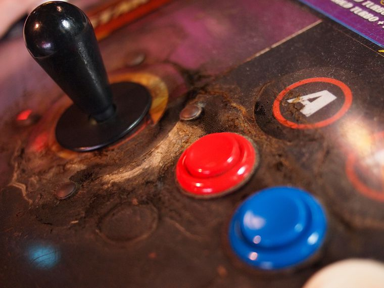

Welcome to Gaming Consoles
There have been a number of home video game consoles since the first unit, the Magnavox Odyssey, which was released in 1972. These consoles have been grouped into generations lasting years based on common technical specifications. As of 2020, there have been eight console generations, with the current leading manufactures being Sony, Microsoft, and Nintendo. Past console manufacturers include Atari, Fairchild, Intellivision Entertainment, Coleco, Sega, NEC, 3DO, and SNK.
Home consoles were built from a selection of standard and customized integrated computer chips, placed onto circuit boards and cases. Over time, home consoles converged to a degree with personal computers, using similar components and system designs, including standardization of main computer chip architecture. Consoles remain as fixed systems, lacking customization options that personal computer components have, and most consoles include customized components to maximize space and reduce power consumption to provide the best performance for game playing, while lowering costs with reduced storage and memory configurations.
